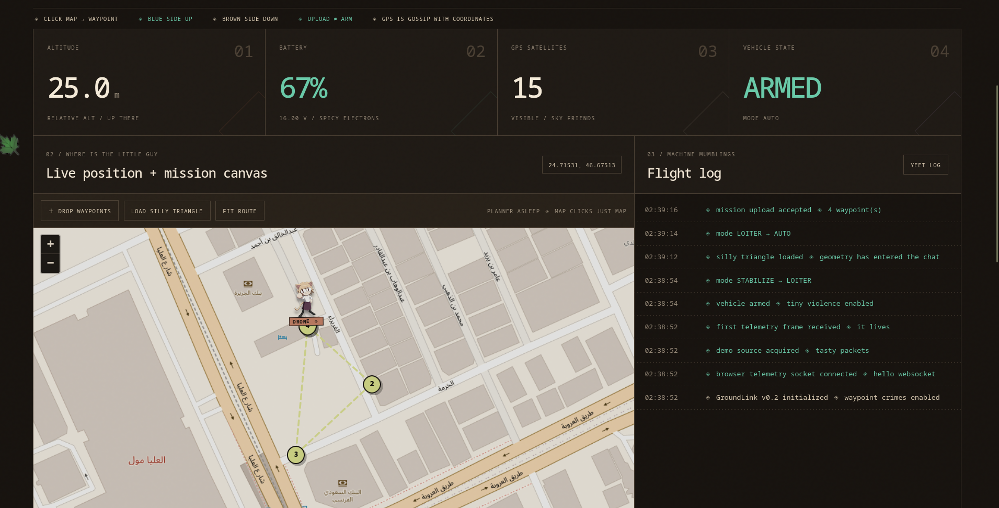

SITL VALIDATEDSYS.01Software / Ground controlvalidated
GroundLink
A real-time Rust ground-control station for MAVLink aircraft, built around an async backend, WebSocket telemetry, and a browser flight interface. Now with a sweep mode I added: a Roomba-style pass over an area.